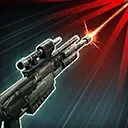
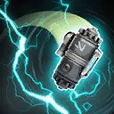
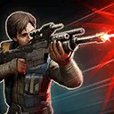
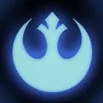

Cassian Andor
Rebel Support who buffs allies at the start of battle and debuffs enemies during battle
Rebel Support who buffs allies at the start of battle and debuffs enemies during battle

Deal Physical damage to target enemy with a 85% chance to inflict Buff Immunity for 2 turns.

Inflict Ability Block, Defense Down, Healing Immunity, Offense Down, and Speed Down (once each) on random enemies for 2 turns. If the primary target is Empire, Expose them for 2 turns. If K-2SO is present, he is called to Assist. Then, gain 20% Turn Meter for each debuffed enemy.

Deal Special damage to target enemy. For each debuff present on other enemies, inflict that debuff on the target for 1 turn.

At the start of each encounter, Rebel allies gain Protection Up (20%) for 3 turns, Rebel Attacker allies gain Defense Up for 3 turns, Rebel Support allies gain Potency Up for 3 turns, and Rebel Tank allies gain Tenacity Up for 3 turns. If K-2SO is present, he gains all of these buffs.
While in Territory Battles: At the start of battle, if all allies are Rogue One, Cassian Andor takes a bonus turn to disguise himself as an enemy character until the end of battle. While disguised, Cassian retains his Unique ability and alignment and is part of the Rogue One faction in addition to his disguise's alignment and faction. At the start of each encounter, all Rebel allies gain Defense Up, Potency Up, and Tenacity Up for 3 turns. Whenever Cassian uses an ability, he gains 12% Turn Meter for each debuffed enemy, he inflicts Ability Block and Buff Immunity for 1 turn and Defense Down and Healing Immunity for 2 turns on target enemy, and K-2SO is called to assist, dealing 97.8% more damage.
- Rebel Assault Territory Battle: Cassian disguises as Snowtrooper Ops (Elite).
- Republic Offensive Territory Battle: Cassian disguises as Wat Tambor.
- Rise of the Empire Territory Battle: Cassian disguises as a modified version of Magmatrooper.
Take on a disguise of an enemy character in this Territory Battle.
- Rebel Assault Territory Battle: Cassian disguises as Snowtrooper Ops (Elite).
- Republic Offensive Territory Battle: Cassian disguises as Wat Tambor.
- Rise of the Empire Territory Battle: Cassian disguises as a modified version of Magmatrooper.